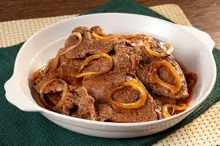

Bistec

Description
Bistek Tagalog is a type of Filipino beef stew. It is made with thin slices of beef and cooked with onions.
It is stewed in a soy sauce and lemon juice mixture until the beef is tender.
Ingredients
- 1 poun Beef Sirloin - thinly sliced and pounded
- 1/2 cup soy sauce
- 1 small onion finely chopper
- 3 tablespoons of oil
- 1 big onion cut into rings
- 1/2 cup of water
- 2 teaspoons of cornstarch
Steps
- Pound meet so that it cooks to be more tender
- Marinate meat in soy sauce lemon juice mixture for at least 1 hour
- Pan fry onions half of the ring onions until soft and remove from pan, set aside
- Pan fry beef 1 minute per side, using extra oil if needed
- Saute garlic and remaining onion, add water and let broil
- Add pan fried beef to pan and simmer until tender
- Top off with onions that were set aside in step 3
- ENJOY!